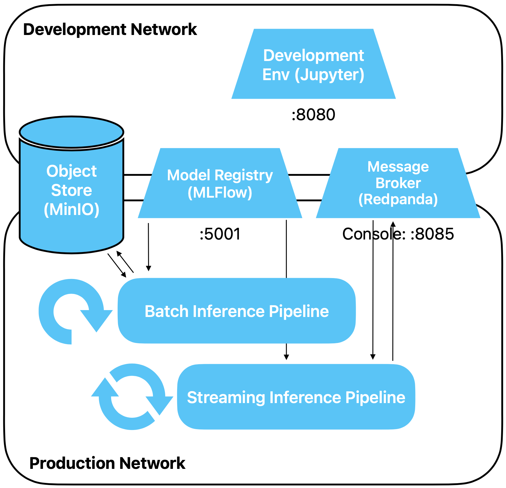

Streaming Inference Pipeline
Nachdem wir eine Pipeline für Batch Inference gebaut haben, wollen wir nun Predictions in
Echtzeit, aus einer Stream Processing Pipeline heraus, machen.
Vorbereitung
Erstelle ein neues Jupyter Notebook für diese Übung.
Übungen
Architektur
Wir fügen unserer Architektur eine weitere Pipeline hinzu. Die Pipeline holt wiederum das Modell
aus MLFlow. Die Daten für die Inferenz erhält sie jedoch von Kafka, und dorthin schreibt sie
auch die Predictions.

Modell laden
Dieser Teil bleibt gleich wie bei der Batch Pipeline. Importiere MLFlow, lade unser Modell via
Champion Alias.
import mlflow
# we never defined an official name, make sure you use the name of your own registered model here
model_name = "mushroom"
# this also only works if you set this alias for above model
model_version_alias = "champion"
model_uri = f"models:/{model_name}@{model_version_alias}"
model = mlflow.sklearn.load_model(model_uri)
Quix
Bisher haben wir via das Python Modul
kafka-python mit Kafka
kommuniziert. Unsere Pipeline werden wir jedoch mit
Quix Streams
schreiben. Quix wirbt mit folgendem Slogan für ihr Produkt:
Python stream processing made simple
Pure Python. No JVM. No wrappers. No cross-language debugging. Use Streaming DataFrames and
the whole Python ecosystem to develop stream processing pipelines in fewer lines of code.
Quix erlaubt auf relativ einfache Weise, in Python Stream Processing Pipelines zu schreiben, und
dabei durch Kafka- und Kubernetes-Unterstützung sehr skalierbar zu bleiben. Insbesondere wird
keine komplexe Basisinfrastruktur benötigt, um loslegen zu können.
Lies dir zum Einstieg die drei
Core
Concepts streaming,
stream processing und
stream processing
pipelines durch.
Wird werden mit einem StreamingDataFrame lokal arbeiten, d.h. in unserer Infrastruktur auf
codespaces, und nicht mit der Quix Cloud. Die Dokumentation zum StreamingDataFrame findest du
hier. Step 3 des
Quickstarts zeigt ein Beispiel,
wie wir vorgehen werden.
Quix Setup
Initialisiere Quix Streams, analog dem Beispiel aus dem Quickstart:
from quixstreams import Application
# create main quix object
app = Application(broker_address="message-broker:9092")
# define topic and message format
input_topic = app.topic(name="mushroom_inference_request", value_deserializer="json")
# create a StreamingDataFrame
sdf = app.dataframe(topic=input_topic)
Nun hast du einen Streaming DataFrame, welcher aus Kafka Event notifications des Topics
mushroom_inference_request erhält. Erweitere den obigen Code um eine Zeile, welche jede
erhaltene Message ausgibt und um eine weitere Zeile, welche den ganzen Code dann ausführt.
Achtung: Obigen Initialisierungs-Code musst du jedesmal, wenn du den Consumer gestoppt
hast, erneut ausführen, damit Quix wieder zu konsumieren beginnt.
Lösungsvorschlag
Die StreamingDataFrame.update() Funktion erlaubt es, Side Effects auszuführen.
Wir verwenden sie, um als Side Effect bei jedem Update des DataFrames, also bei jeder
eingehenden Message, den Inhalt dieser message auszugeben. Unsere messages kommen als
dict daher und print gibt dann einfach diesen dict aus.
sdf = sdf.update(print)
# the following is the same but (unnecessarily) more verbose
# sdf = sdf.update(lambda message: print(f"Inference Request: {message}"))
# and this line starts the consumer
app.run(sdf)
Wenn du deinen Code ausführst, solltest du Log Output sehen, welcher das Setup zeigt und meldet,
dass auf eingehende Nachrichten gewartet wird. Diese musst du nun produzieren.
Starte den Datengenerator wie folgt und brich ihn dann nach ein, zwei Meldungen wieder ab
(ctrl-c). Als Erinnerung: Damit das funkioniert, musst du dich in oder unterhalb dem Ordner
befinden, in welchem das docker-compose.yml mit allen Servcices liegt.
docker compose run --rm --name=datagen --entrypoint=python3 development_env mushroom_datagen.py -v
Du solltest die von Datengenerator gesendeten Inference Requests im Notebook sehen.
Als nächstes soll nicht mehr die Nachricht ausgegeben werden, sondern das Modell aufgerufen und
die
Prediction als weitere Spalte angehängt werden.
Dazu muss:
- Die message von einem dict in einen Pandas DataFrame (oder ein 2D Numpy array)
konvertiert werden
- Die Prediction gemacht werden
- Das Resultat der Prediction in einen Integer Scalar konvertiert werden
- Dieser Integer mit dem Key 'prediction' an die ursprüngliche message (dict) angehängt
werden
Versuche, dies mit sdf.update() analog oben zu erreichen. Gib zur Kontrolle danach
(auch analog
oben) das Resultat aus.
Lösungsvorschlag
import pandas as pd
# als Zweizeiler, etwas kryptisch:
sdf = sdf.update(lambda m: m.update({'prediction': int(model.predict(pd.DataFrame(m, index=[0]))[0])}))
sdf = sdf.update(print)
# oder mit separater Funktion, Schritt für Schritt
def predict(d: dict) -> int:
# reads single row dict and returns prediction as integer scalar
# spelled out to make it easier to read
input_as_df = pd.DataFrame(d, index=[0])
pred_as_array = model.predict(input_as_df)
pred_as_scalar = pred_as_array[0]
return int(pred_as_scalar)
# das innere update ist die update Funktion des python dictionaries und hat nichts mit quix zu tun
sdf.update(lambda m: m.update({'prediction': predict(m)}))
sdf = sdf.update(print)
app.run(sdf)
Schliesslich wollen wir unter einem neuen topic unsere prediction ausgeben. Definiere dazu ein
topic mushroom_inference_result und bringe den StreamingDataFrame dazu, jedes Resultat
an dieses topic zu schicken.
Lösungsvorschlag
# anstelle der beiden letzten Zeilen oben
output_topic = app.topic(name="mushroom_inference_result", value_deserializer="json")
sdf.to_topic(output_topic)
app.run(sdf)
Sende zum Schluss einige Messages (inference requests) und prüfe in Redpanda, ob die
dazugehörigen prediction results als messages ankommen.
Wrapup
Du hast in dieser Übung eine Stream Processing Pipeline gebaut, welche Inferenz-Requests für
unser Mushroom Modell entgegennimmt, mit unserem Modell eine Prediction macht und das Resultat
zurück an Kafka sendet.
Dabei haben wir auch ein paar Abkürzungen genommen, was im Rahmen eines Kurses zwar vertretbar
ist, deren wir uns daber auch bewusst sein sollten:
- Wir haben uns nicht um Skalierbarkeit gekümmert. Mit unserem Aufbau und dank Quix ist
die
Pipeline jedoch einfach skalierbar, wenn sie unter Kubernetes läuft
- Unser Meldungsformat war sehr einfach und ohne jegliche Metadaten
- Unser Meldungsformat war ein einfaches json, ohne Schema und Validierung
- Einige Dinge haben wir hartkodiert bzw. nicht sauber entkoppelt (z.B. Feature Typen,
Topic)
- Keine Tests, kein sauberes Error Handling, kein Monitoring
Und inbesondere
Wir machen Inferenz mit Realtime Daten, welche alle im Request daher kommen. Wir verwenden also
keine vorausberechneten Features, wir joinen keine anderen Feature-Quellen. Wer hier mehr wissen
möchte, muss sich vertieft mit Stream Processing auseinandersetzen.